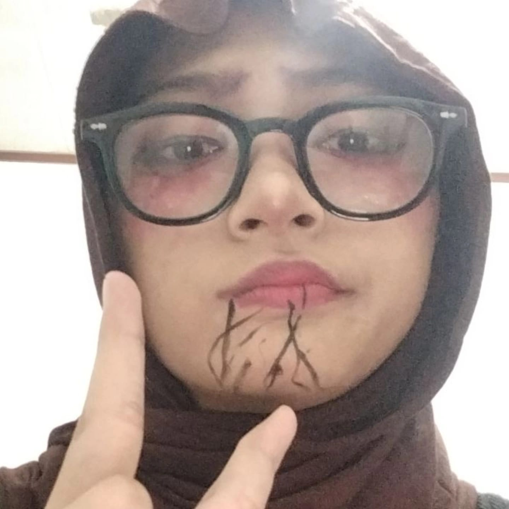

Halo, saya Melati Gusti Hidayah, mahasiswa semester 4 program studi Sistem Informasi di Universitas Masoem.
Saya memiliki minat besar pada dunia teknologi, khususnya pengembangan website, UI/UX design, dan sistem informasi.
Saya senang mempelajari HTML, CSS, JavaScript, jQuery, dan React JS untuk membuat website yang modern dan user-friendly.
Target saya adalah menjadi Web Developer yang mampu membangun aplikasi yang bermanfaat.

Komunikasi
Problem Solving
HTML, CSS, JS
jQuery, React